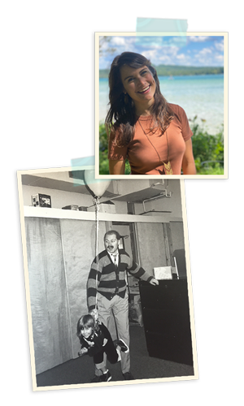

Leah's life by design
Design has been part of my life from the very beginning.
My earliest memories are of afternoons in my dad's office (he was a Graphic Designer), surrounded by markers, magazines, and light boxes that fueled my imagination. That spark never left.
I first followed my passion for the environment, earning a degree in the sciences and an MBA in Sustainable Business, where I discovered how much I loved pairing research and communication with design. Along the way, I built an invasive plant species removal program, organized databases, and learned how to code.
Since then, I've designed for everything from transit apps at moovel to internal tools at Hinge Health, packaging for a chocolate business, and website revamps for small businesses. My work always centers on making complex systems feel intuitive and approachable.
Today, I run Borns Design, my own web design company dedicated to helping businesses and creatives share their work in a clear, engaging way. At the same time, I'm open to new digital product design or UX/UI Design opportunities, where I can continue solving complex problems and creating thoughtful, user-centered experiences.
I believe design is a vehicle for change: when done well, it educates, inspires, and encourages curiosity. As my dad used to say each morning before school: “Learn lots, fill your head with knowledge, and ask three questions.”
